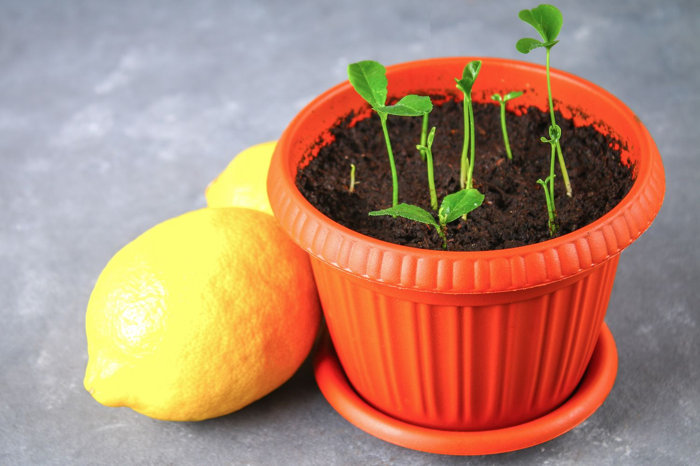
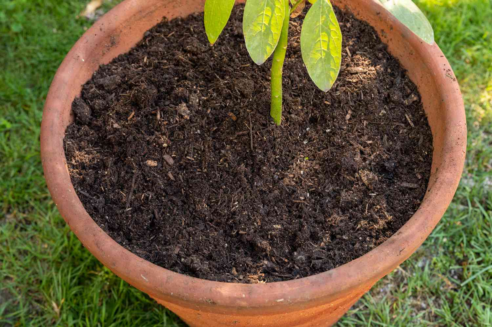
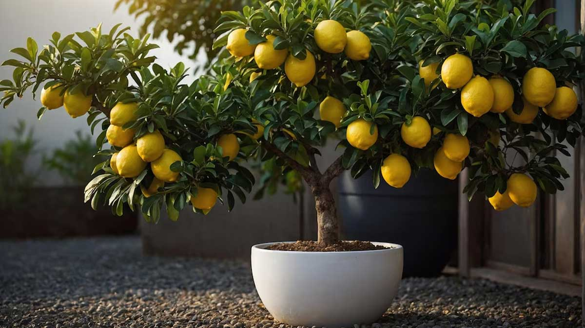

Fresh Lemons from Your Balcony!

You can start from lemon seeds or buy a grafted sapling from a nursery.

Use a deep container with good drainage holes and citrus-friendly soil.

Place the pot in a sunny location. Lemons need 8+ hours of sunlight daily.
Yes, especially dwarf lemon varieties, as long as they receive enough light.
Usually within 2-3 years if grown from grafted saplings, longer from seeds.
If grown indoors without insects, hand-pollination helps improve yield.